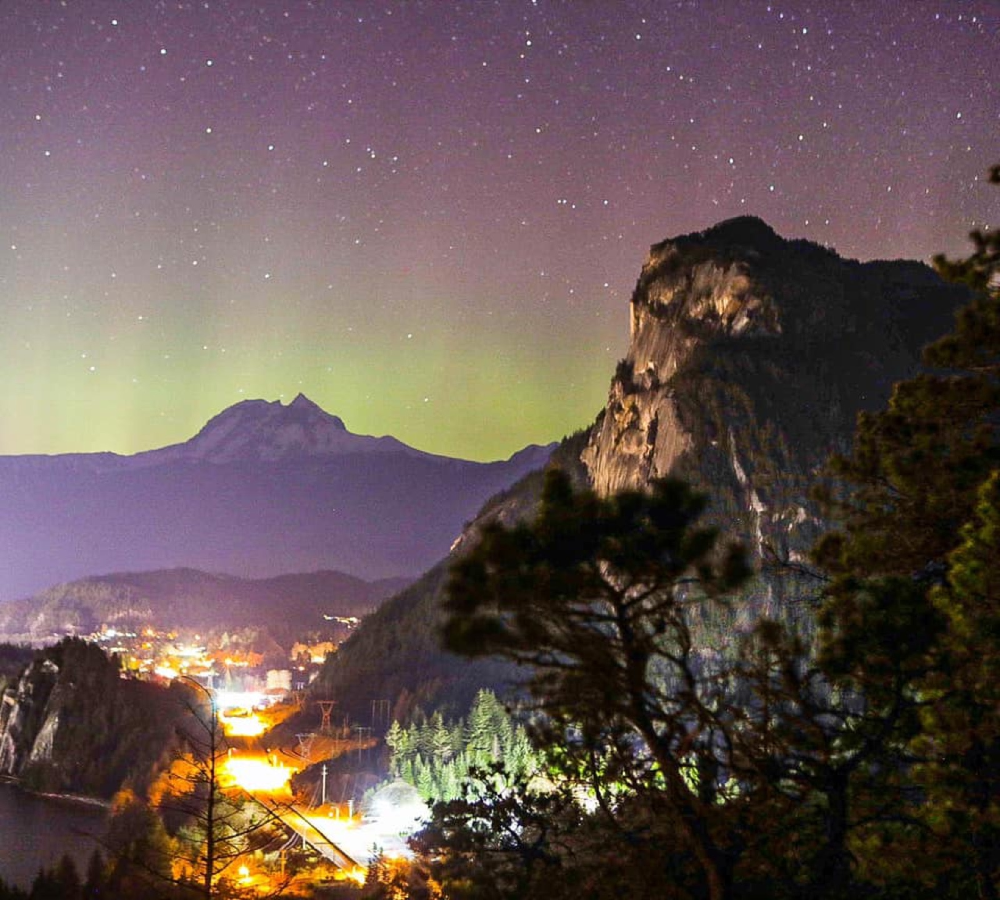
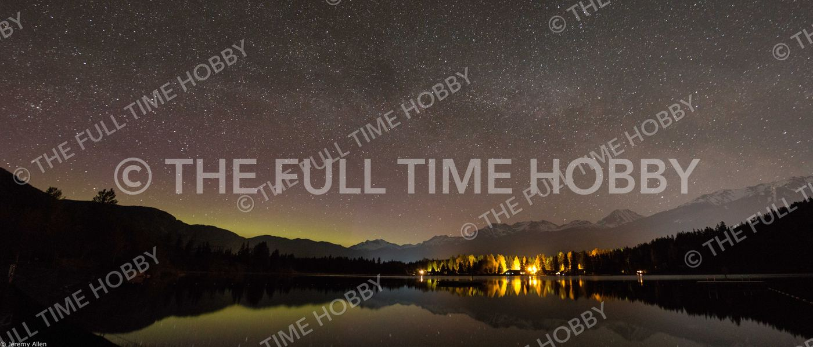
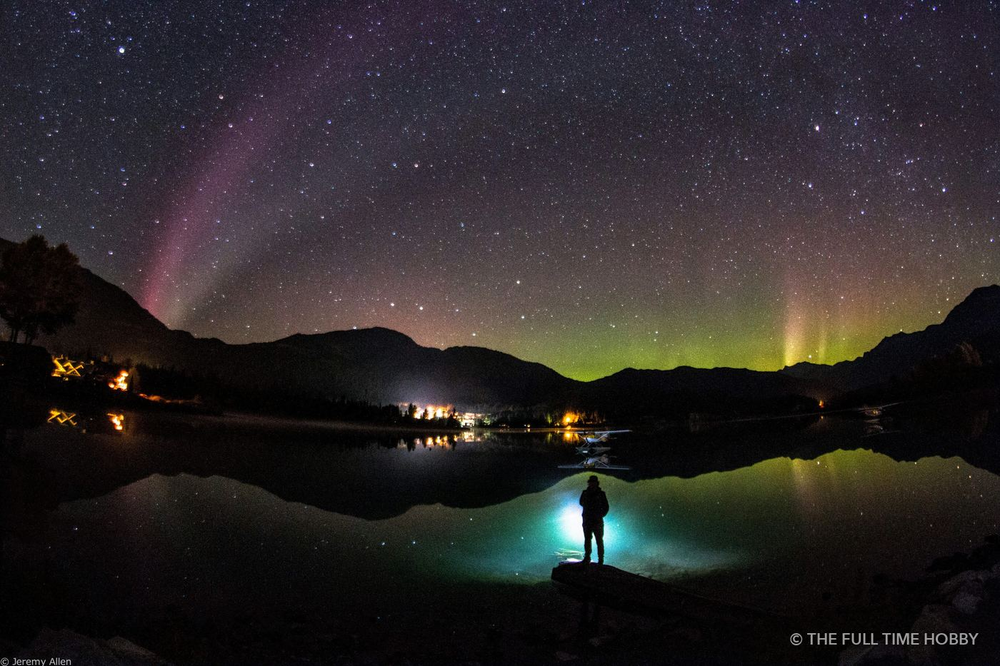
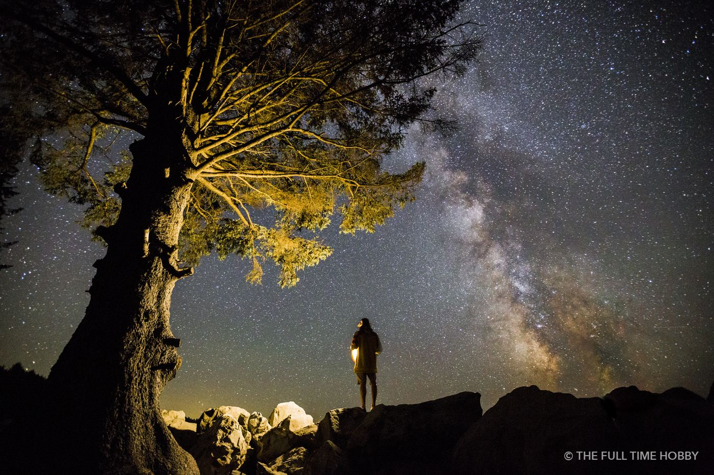

How often can you see the aurora in Squamish?
Squamish and Whistler sit around 50° north, which is far enough south that the northern lights only reach us during stronger geomagnetic storms. On an average night there’s nothing to see. During a strong storm, like the ones in May and October 2024 that were seen across BC, the aurora can climb high enough to fill the northern sky.
The practical upshot: you don’t plan an aurora night weeks out. You watch the forecast and go when the numbers and the weather both line up.
Reading the aurora forecast
- Kp index: at our latitude you generally want a forecast Kp of 6 or higher (a G2 storm or stronger) before it’s worth heading out. Kp 5 can work on a very dark, clear night.
- Bz: real-time solar wind data matters more than the forecast. When the Bz value swings south (negative) and stays there, the show usually picks up within the hour.
- Where to look: NOAA’s Space Weather Prediction Center and apps like SpaceWeatherLive show both the Kp forecast and live solar wind data.
- Clouds: the coast is cloudy more often than not. Check the cloud cover forecast before you drive anywhere.

Where to shoot around the Sea to Sky
You need two things: a clear view to the north and as little artificial light as possible. Lakes are ideal because a calm surface doubles the aurora with a reflection. Around Squamish, the lakes north of town are darker than anywhere in the valley itself. In Whistler, the lakes along the valley floor give you open views north without the village lights in your frame.
Wherever you go, scout it in daylight first, park legally, and stay on established trails and shorelines. Many of the best spots are inside provincial parks with their own rules for night access, so check BC Parks before you go.

Camera settings for the northern lights
- Lens: the widest, fastest lens you have. Something around 14–24mm at f/1.4–f/2.8 is ideal.
- ISO: start around 1600–3200 and adjust. Modern full-frame bodies handle 3200–6400 cleanly.
- Shutter: 2–10 seconds. Fast-moving aurora looks sharper and keeps its structure with shorter exposures; faint, slow glows can take 10–15 seconds.
- Focus: switch to manual, zoom in on a bright star in live view and focus until it’s a pinpoint. Tape the focus ring if you’re walking around.
- White balance: set it manually around 3500–4200K so your colours don’t shift from frame to frame.
- Shoot RAW and use a tripod with a two-second timer or remote.
Your phone is worth a try too. Night modes often pick up colour that’s too faint for your eyes, which is a good way to check whether the aurora is out before you set up the big camera.

What to bring
- Tripod, spare batteries (cold drains them fast) and a lens cloth for dew
- Headlamp with a red-light mode so you don’t ruin your night vision or anyone else’s shot
- Warm layers, even in summer; a lakeshore at 1 a.m. gets cold
- Patience: the best bursts often come in short waves, sometimes after midnight
If you don’t own a full-frame body or a fast wide lens, you can rent pro camera gear in Squamish for the night.